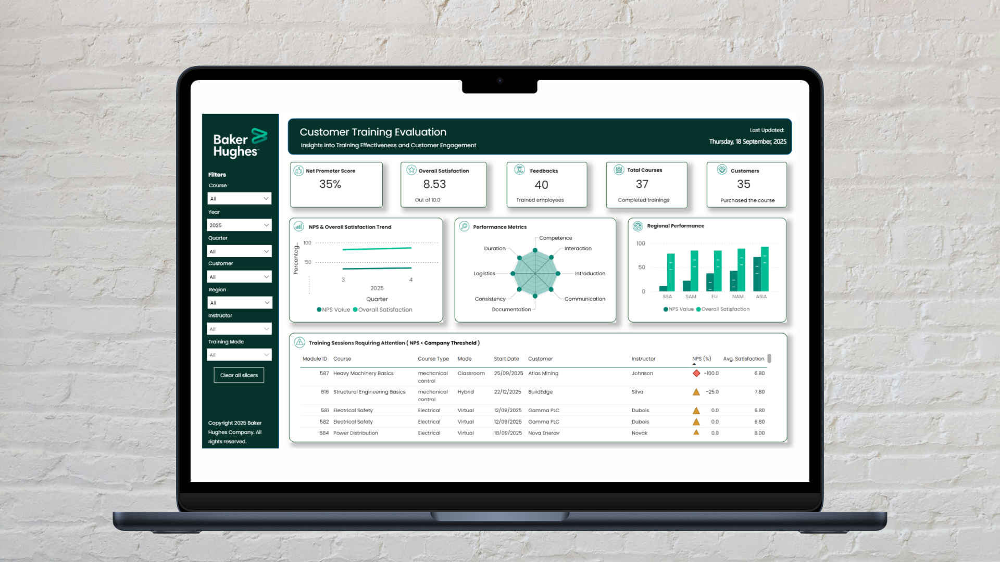
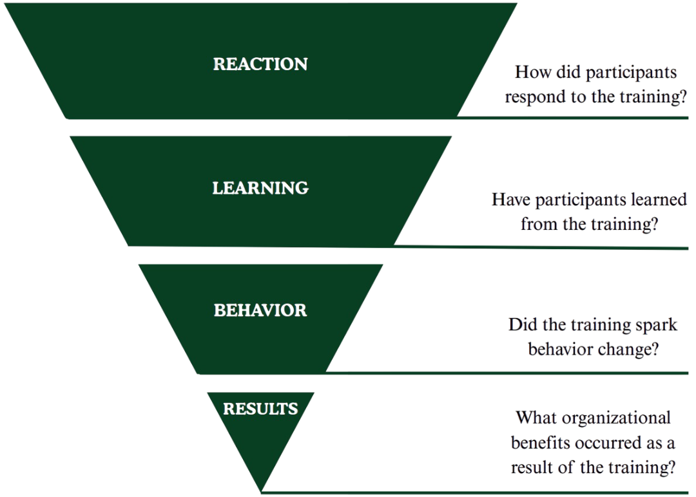
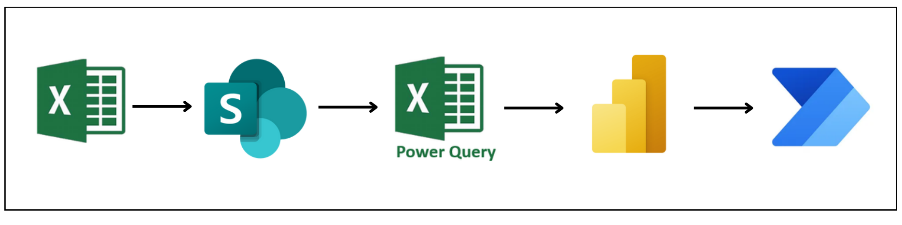
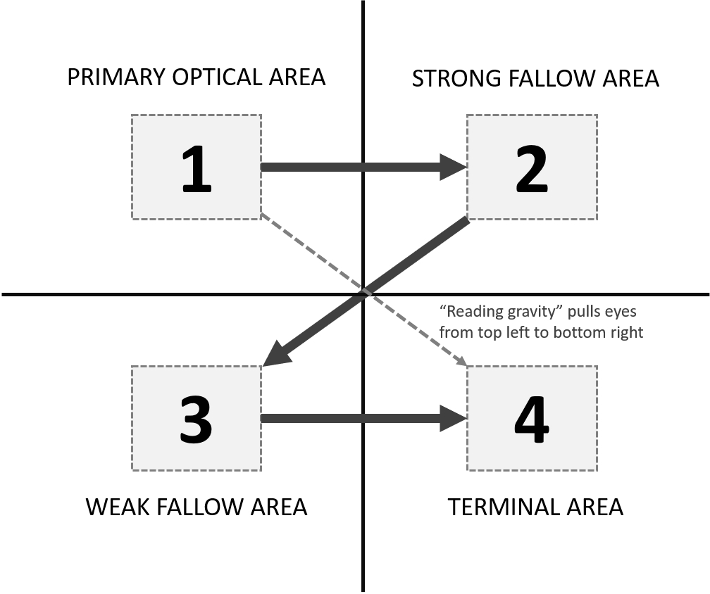
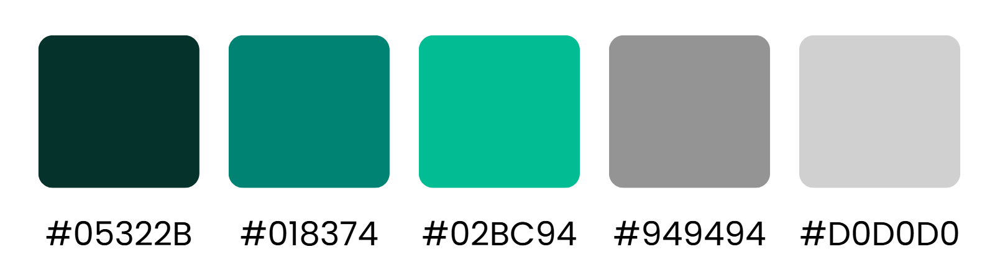
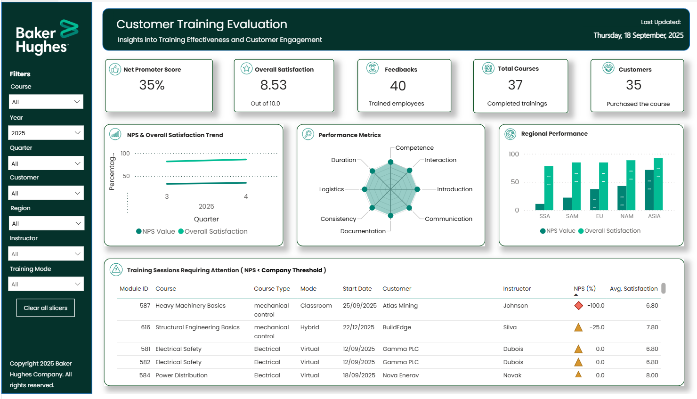

Baker Hughes has a strong culture of evaluating their B2B customer training programs, primarily utilizing the industry-standard Net Promoter Score (NPS). To help the team extract even deeper insights from their evaluations, I designed and validated a multi-metric dashboard. By triangulating the NPS with eight other quantitative metrics the company was already collecting, such as scores for instructor competence and training documentation, I helped the team visualize trends and identify specific areas for training curriculum enhancement.
That single question is the foundation of the Net Promoter Score (NPS). The metric is simple: respondents are categorized into Promoters (scores of 9-10), Passives (scores of 7-8), and Detractors (scores of 0-6). The final score is calculated by subtracting the percentage of Detractors from the percentage of Promoters. At Baker Hughes, this score served as a reliable, high-level indicator of course quality and customer loyalty.
While the NPS is good for a high-level overview, as a standalone metric it can sometimes oversimplify the multidimensional nature of a learner's experience. It indicates how participants feel overall, but it doesn't inherently explain why they feel that way. Was a high score driven by engaging instructor communication, or by the quality of the documentation?
To uncover the "why" behind the scores, the evaluation team often had to read through every single participant comment, which was incredibly time-consuming. But Baker Hughes is a highly data-mature organization. Over the years, they had already collected a volume of data, consisting of eight additional quantitative evaluation metrics covering quantitative scores from logistics to course consistency.
However, these supplementary metrics were typically only analyzed in-depth when an NPS score fell below a specific threshold. This meant that a lot of valuable insights about average or high-performing courses remained unexplored. My mission was clear: the solution wasn't to collect new data, but to design a tool that could effectively triangulate and visualize the rich data foundation Baker Hughes had already built. I wanted to create a bridge between their high-level NPS scores and actionable insights.
The eight quantitative metrics that were present within the dataset were: introduction, documentation, consistency, logistics, duration, communication, trainer competence, and interaction. To understand the value of these quantitative scores, I used Kirkpatrick’s training evaluation framework as an initial baseline. This helped me to see exactly what they were measuring. The assessment showed that they primarily captured level 1: immediate participant reactions and level 2: learning impact.
After I understood what these metrics actually measured, I structured these metrics into three clear performance categories: Training Delivery, Quality, and Logistics. Sorting the metrics into these three core pillars made it possible to cross-validate different insights directly alongside the high-level NPS. By organizing the parameters into these three distinct pillars, it becomes much easier to see macro-patterns at a glance.

Imagine a technical training session that returns a critically low Net Promoter Score. Rather than stopping operations to guess the cause or wade through hundreds of written comments, the evaluator spots the issue at a single glance.
By cross validating the data, the dashboard reveals that while physical logistics scored perfectly, course interaction and instructor competence hit massive lows. Because no other dimensions got a low score, this lower NPS is likely due to a delivery effectiveness issue. Knowing this, management can proactively support the instructor before the next scheduled session.
While a dashboard cannot completely replace the full qualitative context of written feedback, it provides a valuable head start. Gathering all metrics onto a single screen proves whether user friction correlates with a quality indicator. This changes the dashboard from a passive scorecard into a practical starting point for training curriculum enhancement.
Before focusing on the visual layout, the system had to be simple to maintain long-term. I engineered an automated backend pipeline within Power Query to shape the data in the right format. Instead of wasting hours sorting through manual files, the team now drops raw survey sheets into a shared folder, and the database automatically cleans, parses, and updates the dashboard instantly.

Early prototypes split the information across multiple navigation tabs, which caused immediate cognitive overload. To support fast-paced decision-making, I pivoted to a single-page dashboard. I applied the Gutenberg Diagram principle to align with natural western reading paths (from top-left to bottom-right), grouping layouts logically to reduce visual weight:

To keep the layout clean and fully on-brand, the design strictly aligns with enterprise guidelines. The font choices rely entirely on Poppins to ensure dense charts stay highly legible, while the palette swaps dark slates with corporate teal accents to highlight critical insights.

To validate the solution, I ran a task-based usability study with ten team members across the division, testing long-term trend recognition, information retrieval, and strategic problem isolation.
Surpassing the initial 80% success benchmark smoothly.
Landing firmly within the "excellent" usability tier.
The testing confirmed that users with little to no prior dashboard experience could successfully search within global datasets and isolate specific course friction areas. An area for improvement was to find a way to include the written qualitative comments.
This completed design brings all the different data elements together on a single screen. The final layout is depicted below, please note that it utilizes simulated datasets to respect strict corporate confidentiality while accurately demonstrating how the system maps out real-world trends, visualizes multi-metric relationships, and flags critical focus areas.

Working on this project showed me how design and research can make dense datasets much more accessible. By applying a user-centered strategy to existing metrics, I helped Baker Hughes build a clearer way to look at their training program. The project moves the focus away from a standalone score and highlights the connections behind the numbers. Ultimately, this approach helped unlock the potential of their existing data, shifting the conversation from a simple "What is our score?" to a more useful space that provides the insights needed to answer "How do we elevate our training even further?"